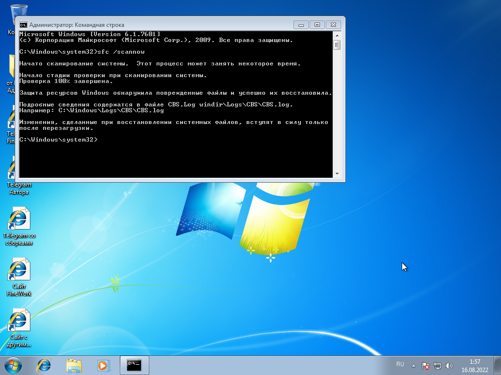

Результаты проверок на целостность
Windows 11 21H2 V3 by Adderly
Windows проходит проверку на целостность.
Windows 10 21H2 V2 by Adderly
Windows проходит проверку на целостность.
Но восстанавливает так называемые поврежденные файлы,
потому что удалено несколько приложений.
Про это написано в листинге изменений Windows 10 21H2 V2 by Adderly.
После повторной проверки, никаких восстановлений не будет.
Windows 10 1709 V2 by Adderly
Windows проходит проверку на целостность.
Windows 10 1607 by Adderly
Windows проходит проверку на целостность.
Windows 8.1 V5 by Adderly
Windows проходит проверку на целостность.
Windows 8.1 Lite x32 by Adderly

Windows проходит проверку на целостность.
Windows 8.0 V2 by Adderly
Windows проходит проверку на целостность.
Но восстанавливает так называемые поврежденные файлы,
потому что удалено несколько приложений.
Про это написано в листинге изменений Windows 8.0 V2 by Adderly.
После повторной проверки, никаких восстановлений не будет.
Windows 7 V4 by Adderly

Windows проходит проверку на целостность.
Но восстанавливает так называемые поврежденные файлы,
потому что установлен патч для тем.
После повторной проверки, никаких восстановлений не будет.